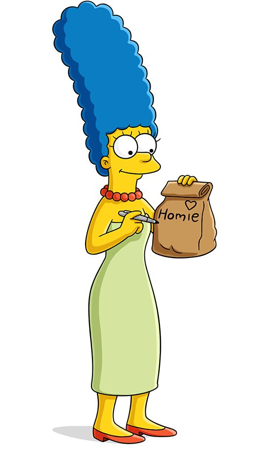
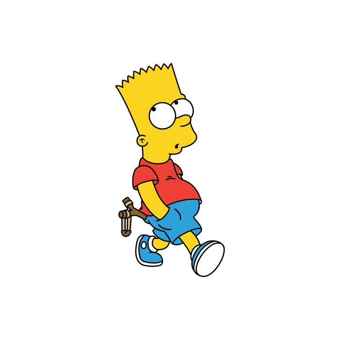

Abuelo Abraham "Abe" Simpson
- Es un veterano de la Segunda Guerra Mundial y cuenta historias larguísimas e incoherentes que casi nunca tienen final.
- Su nombre completo es Abraham Jay Simpson II. Tiene al menos dos hijos ilegítimos: Herbert Powell y Abbey.
- En una ocasión afirmó que casi mató a Hitler con una jabalina en los Juegos Olímpicos de 1936 (aunque la historia cambia cada vez que la cuenta).
- Vive en el Castillo de Retiro de Springfield porque Homero lo envió allí poco después de mudarse con la familia.

Homero Jay Simpson
- Su famosa expresión "¡D'oh!" se escribía originalmente en los guiones como "annoyed grunt" y fue incluida en el Diccionario Oxford en 2001.
- El pelo de la nuca y la oreja de Homero forman las iniciales "M" y "G" de Matt Groening, el creador de la serie.
- Su correo electrónico real es ChunkyLover53@aol.com (aunque solo responde con mensajes automáticos).
- Según su carnet de conducir mide 1,76 m, pesa 108 kg y nació el 12 de mayo de 1956 (aunque su edad cambia constantemente en la serie).

Marge Bouvier Simpson
- Su nombre real es Marjorie. Se inspira en la madre de Matt Groening (Margaret) y en su tía.
- Se tiñe el pelo de azul desde los 15 años porque empezó a canear muy joven. El tono exacto se conoce como "azul 56".
- Es una de las pocas personajes principales que no tiene segundo nombre (junto a Maggie).
- En el videojuego de 1991 se puede ver que debajo de su enorme peinado tiene orejas de conejo (una teoría que nunca se confirmó oficialmente).

Bart Simpson
- Su nombre completo es Bartholomew JoJo Simpson. "Bart" es un anagrama de "brat" (mocoso en inglés).
- Su pelo siempre tiene exactamente nueve puntas. Nunca cambia.
- Fue el personaje principal original de la serie; Homero se convirtió en el protagonista más adelante.
- Su primera palabra fue "¡Ay, caramba!". Es zurdo (como la mayoría de los personajes de la serie).
Lisa Marie Simpson
- Tiene un coeficiente intelectual de 159 (el segundo más alto de la familia después de Maggie).
- Es vegetariana desde el episodio con Paul y Linda McCartney, quienes pusieron como condición que permaneciera vegetariana para siempre.
- Su nombre completo es Elizabeth Marie Simpson y se inspiró en una de las hermanas reales de Matt Groening.
- Es la única de los tres hijos que tiene un segundo nombre oficial confirmado (Marie).
Maggie Simpson
- El sonido del chupete lo hace el propio Matt Groening con la boca.
- En los títulos de crédito originales, cuando la pasan por el escáner del supermercado aparece el precio de 847,63 dólares (el costo promedio mensual de criar a un bebé en EE.UU. en 1989).
- Tiene el coeficiente intelectual más alto de toda la familia Simpson: 167.
- Fue quien disparó al Sr. Burns en el famoso episodio de dos partes "¿Quién mató al Sr. Burns?".